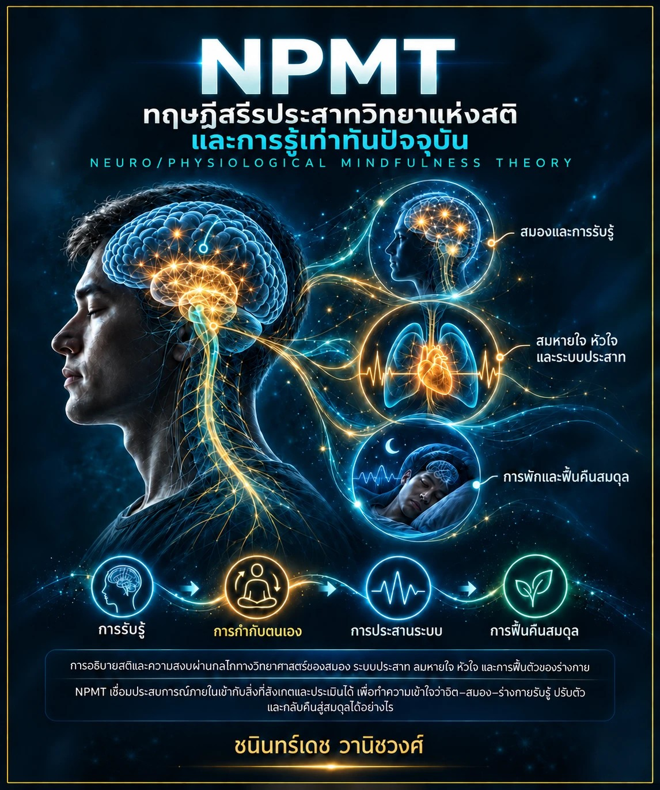
NPMT เสนอกรอบความคิดว่าสติและความสงบอาจเกิดจากการประสานงานของหลายระบบในร่างกาย มิใช่ความรู้สึกที่แยกขาดจากชีววิทยาของมนุษย์ หนังสือเชื่อมประสบการณ์ภายในเข้ากับสิ่งที่สังเกต วัด และทดสอบได้ ตั้งแต่สมอง ระบบประสาทอัตโนมัติ ลมหายใจ และหัวใจ ไปจนถึงการกำกับตนเอง การฟื้นตัว และการกลับคืนสู่สมดุล
NPMT ไม่ใช้ค่าชีวภาพเพียงค่าเดียวตัดสินว่าใคร “มีสติ” มากกว่าใคร และไม่เสนอความสงบแทนการรักษาทางการแพทย์ แต่สร้างสมมติฐาน กลไก และเงื่อนไขที่ตรวจสอบหรือหักล้างได้
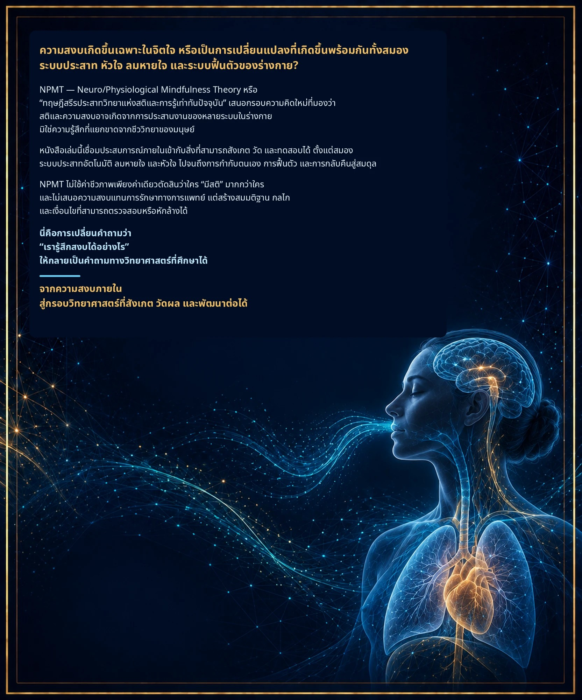
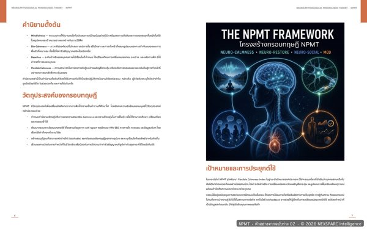
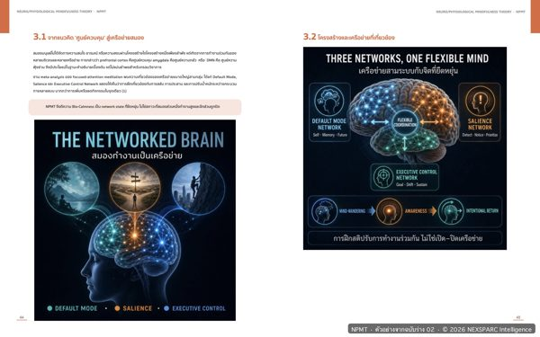
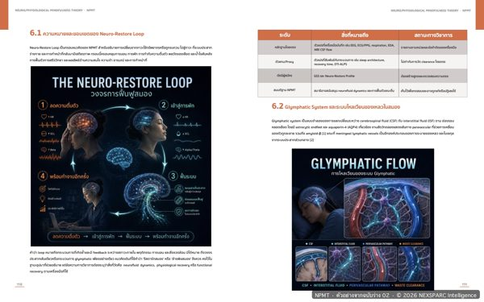
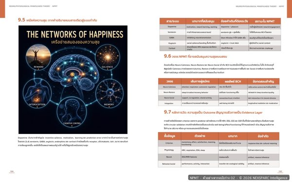
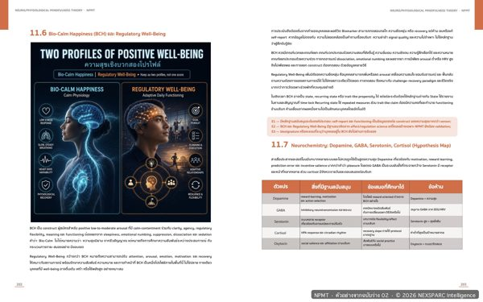
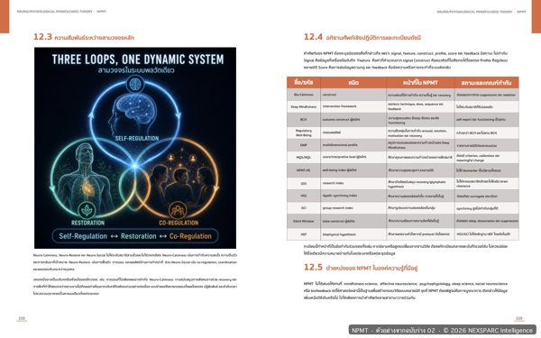
ดัชนีทุกตัวมีสูตร นิยามสัญลักษณ์ ช่วงค่า และวิธีตรวจความตรง — เช่น Mindfulness Quality Score (MQS), Glymphatic Support Score (GSS), HSS และ GCI
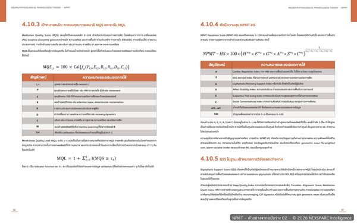
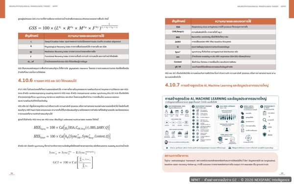
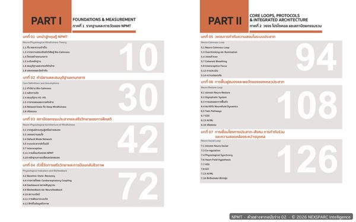
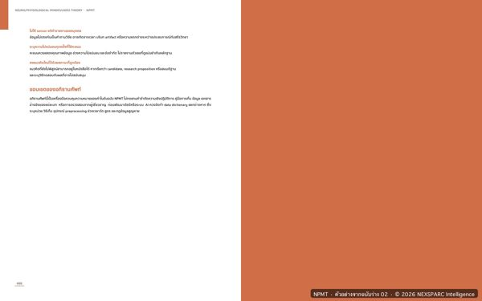
ตัวอย่างบางหน้าจากฉบับร่าง 02 (สารบัญ และหน้าสุดท้าย 466–467) · กดที่รูปเพื่อดูขนาดใหญ่
วงจรการกำกับความสงบในระบบประสาท — ความสนใจ การคิดวน การหายใจแบบ coherent และ interoception
ความสอดคล้องทางสรีรวิทยาระหว่างบุคคล — การกำกับร่วม (co-regulation) ในครอบครัวและกลุ่ม
การนอนและการฟื้นตัวของสมอง — ศึกษาเป็นผลลัพธ์งานวิจัย ไม่ใช่สิ่งที่อ้างว่าวัดได้จากอุปกรณ์
ตัวชี้วัดหลายสัญญาณ (HRV การหายใจ การนอน) แบบ baseline → state → recovery พร้อมบอกความไม่แน่นอน
| ระดับ | ความหมาย | ตัวอย่างใน NPMT |
|---|---|---|
| Tier 1 | หลักฐานได้รับการยอมรับค่อนข้างดี | สมองและร่างกายสื่อสารสองทิศทาง ลมหายใจสัมพันธ์กับหัวใจ การนอนมีบทบาทต่อการฟื้นตัว |
| Tier 2 | หลักฐานเบื้องต้น หรือผลยังไม่สม่ำเสมอ | ผลของการฝึกสติต่อ HRV, ความสอดคล้องทางสรีรวิทยาระหว่างบุคคล |
| Tier 3 | สมมุติฐาน / เครื่องมือต้นแบบของ NPMT | ดัชนีต้นแบบ เช่น Bio-Calm Happiness (BCH) — เปิดให้ทดสอบและหักล้าง |
| ผลที่คาด | ถ้าเกิดสิ่งนี้ ต้องแก้หรือปฏิเสธ | |
|---|---|---|
| H1 Convergence | ประสบการณ์ภายใน สรีรวิทยา และพฤติกรรมสอดคล้องกันอย่างน้อยบางส่วน | เปลี่ยนแค่ตัวชี้วัดเดียวซ้ำ ๆ โดยไม่สัมพันธ์กับมิติอื่น |
| H2 Within-person reproducibility | รูปแบบภายในบุคคลทำซ้ำได้ในเงื่อนไขใกล้เคียง | ผลไม่เสถียรเกินความคลาดเคลื่อนของเครื่องมือ |
| H3 Transfer | ทักษะถ่ายโอนสู่อารมณ์ การฟื้นตัว และชีวิตจริง | ได้ผลเฉพาะขณะหายใจตามจังหวะหรือขณะใช้อุปกรณ์ |
| H4 Incremental validity | ดัชนี NPMT พยากรณ์ผลได้เพิ่มจากมาตรวัดมาตรฐาน | ไม่เพิ่มความตรงเชิงพยากรณ์ หรือทำซ้ำไม่ได้ |
| H5 Interpersonal synchrony | ความสอดคล้องทางสรีรวิทยาระหว่างบุคคลมีความหมายตามบริบท | อธิบายได้ด้วยสิ่งเร้าร่วมหรือการเคลื่อนไหวเพียงอย่างเดียว |
ค่าจาก WHOOP / นาฬิกา ใช้ดูแนวโน้มเทียบกับค่าปกติของตัวเอง ไม่ใช้วินิจฉัย และไม่จัดอันดับคน
ทุกค่าบอกอุปกรณ์ เวลา และหน่วย แยกค่าจากเซนเซอร์ ค่าประมาณ และการตีความของ AI
เน้นการดูแลตัวเองและแนะนำให้พบผู้เชี่ยวชาญ ไม่ปรับยา ไม่แทนคำแนะนำแพทย์
การฝึกสติไม่ได้เหมาะกับทุกคน มีเกณฑ์หยุดเมื่อเกิดความวิตกรุนแรง สับสน หรืออาการผิดปกติ
สิ่งที่จะทดสอบ: การฝึก Bio-Calmness 15 นาทีก่อนนอน
ผลลัพธ์ที่วัด: การนอน (วัดจากอุปกรณ์และแบบสอบถาม) ความจำ/การรู้คิด และการหกล้มหรือเหตุไม่พึงประสงค์
รูปแบบ: เทียบกับกลุ่มควบคุมที่ทำกิจกรรมอื่น (active control) · ขอความยินยอม · มีการติดตามและส่งต่อผู้เชี่ยวชาญ
สถานะ: อยู่ในขั้นออกแบบการวิจัย ยังไม่มีผลการทดลอง — เราจะเผยแพร่ผลเมื่อมีข้อมูลจริง